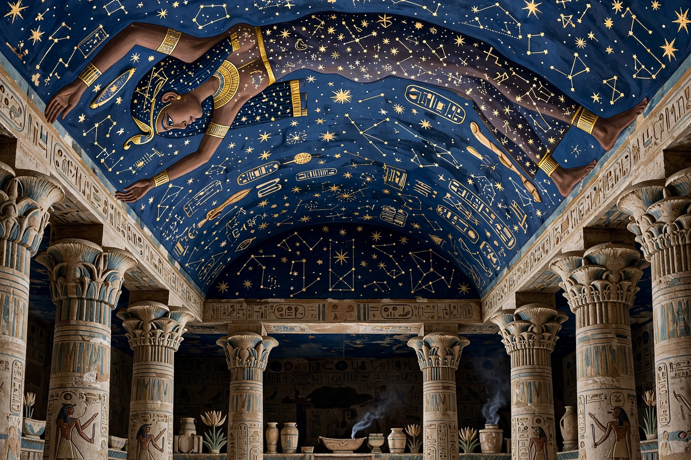

From Wikipedia, the free encyclopedia
| Nut | |
|---|---|
| Affiliation | Egyptian mythology; goddess of the sky |
| Parents | Shu and Tefnut |
| Consort/brother | Geb (the earth) |
| Children | Osiris, Isis, Set, Nephthys |
| Depicted as | A woman arched over the earth, her star-covered body forming the heavens |

Nut (Egyptian Nwt) is the ancient Egyptian goddess of the sky, whose star-covered body arches over the world. Daughter of Shu (air) and Tefnut (moisture), sister-wife of Geb the earth, and mother of Osiris, Isis, Set and Nephthys, she forms with Geb the great cosmic embrace at the centre of the Heliopolitan creation: separated by their father Shu, who holds her up, the space between them is the world of air and light in which life happens. Every evening she swallows the sun; every morning she gives birth to it — the sky as a mother through whose body the sun god travels.
The myth, told in its fullest form by Plutarch, relates that Ra, fearing Nut's children would displace him, forbade her to give birth on any day of the year. Nut appealed to Thoth, who gambled with the moon god Khonsu at draughts and won enough moonlight to make five extra days outside the year — the epagomenal days of the Egyptian calendar — on which Osiris, Isis, Set, Nephthys and Horus the Elder were born in turn. In the painted image found on coffins and tomb ceilings — Nut stretched overhead, fingers and toes at the horizons, Geb recumbent below, Shu between them holding her up — the cosmos is a family held apart by love and law.
Nut is also the coffin and the sarcophagus: "I am Nut; I have come to envelop you", says the goddess to the dead king in the Pyramid Texts, and images of her spread protectively inside coffin lids made the dead person's last bed her body. Stars were painted on her belly; the Milky Way has been proposed as her arms or backbone in recent scholarship. To be buried was to return into the sky-mother and be reborn with the sun.
Egyptian mythology · Ra · Thoth · Set · Maat